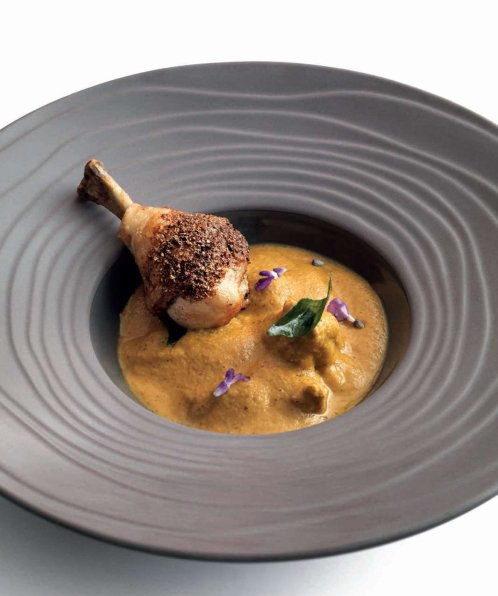

Goan chicken curry (Xacuti de galinha)

Xacuti is a great curry made with chicken or lamb, and a vegetarian version is possible with vegetables like courgettes, pumpkin, carrots and potatoes. I have not used the often-included poppy seeds in the spice mixture to keep the sauce smoother, but feel free to add 1 tablespoon of toasted poppy seeds before blending.
For the spice paste
To make the spice paste, first make a spice powder. Toast the coconut in a dry frying pan over a medium heat, stirring, until it is lightly coloured. Immediately tip it into a spice grinder, or you can use a pestle and mortar. Add the whole spices and seeds to the pan and sauté over a medium heat until they are aromatic. Add them to the toasted coconut and leave to cool, then blitz until coarsely ground. Set aside 4 teaspoons.
Add the grated fresh ginger and turmeric to the ground spices in the spice grinder with as little water as necessary to make a coarse paste, then set aside.
Separate the chicken legs into drumsticks and thighs. Bone and skin the thighs, then cut them into bite-sized pieces.
Heat 2 tablespoons of the oil in a pan, add the onion and sauté for 8–10 minutes until softened and light brown. Add the garlic and continue sautéing until it is golden brown, then add spice paste and sauté for 2 minutes. Transfer to a blender or food processor and blitz, then set aside.
Preheat the oven 200°C.
Wash and dry the pan. Return the pan to the heat and add the remaining 1 tablespoon oil. Add the chicken thighs and sear for 6–8 minutes to brown all over. Add the spice paste to the pan and stir in well. Mix the tamarind juice with half of the coconut milk, than add it to the chicken with the cardamom pods and cloves, and bring to the boil, stirring. Reduce the heat and simmer, uncovered, for 10–12 minutes, until the chicken is cooked through and the juices run clear when the pieces are pierced with the tip of a knife. Add the remaining coconut milk, the vinegar and salt to taste. Leave to simmer for a further 5 minutes.
Meanwhile, put the reserved spice powder on a plate and roll the drumsticks in it until they are coasted. Place them in a roasting tray lined with a non-stick oven mat and roast for 15 minutes, or until cooked through and the juices run clear. Leave to rest for 5 minutes, covered with foil.
Divide the chicken thighs and gravy among 4 bowls and add a drumstick to each. Garnish and serve immediately, with boiled rice, if you like.